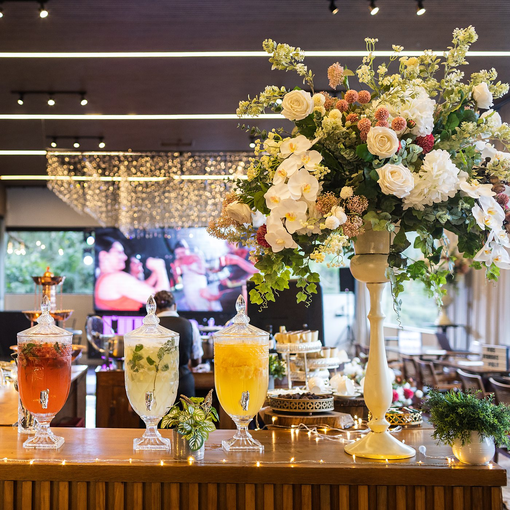
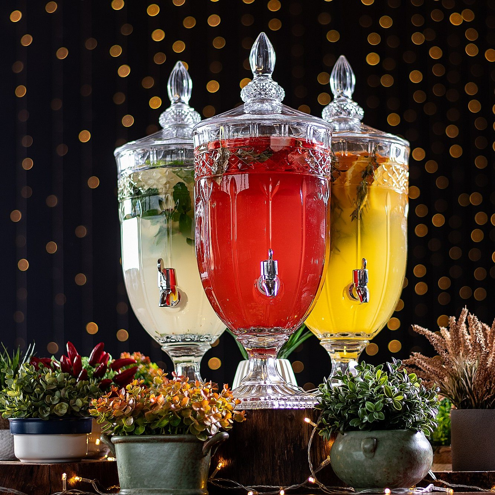
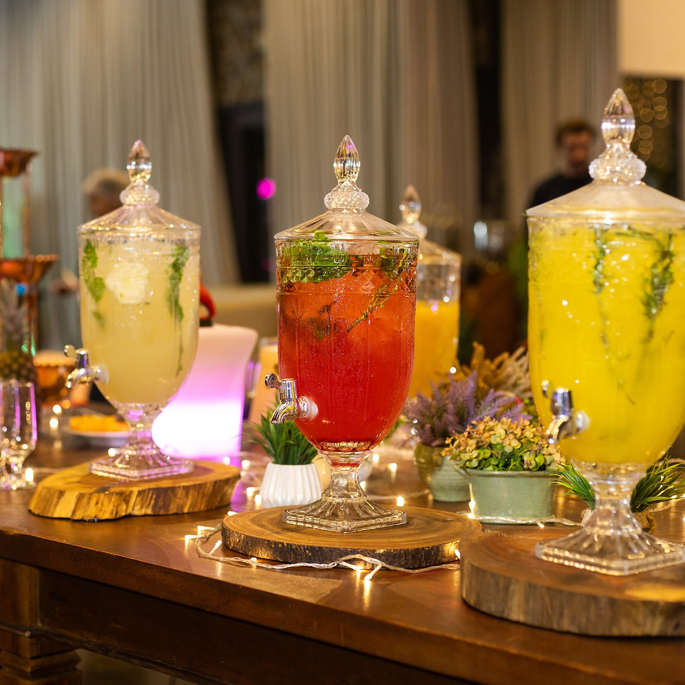
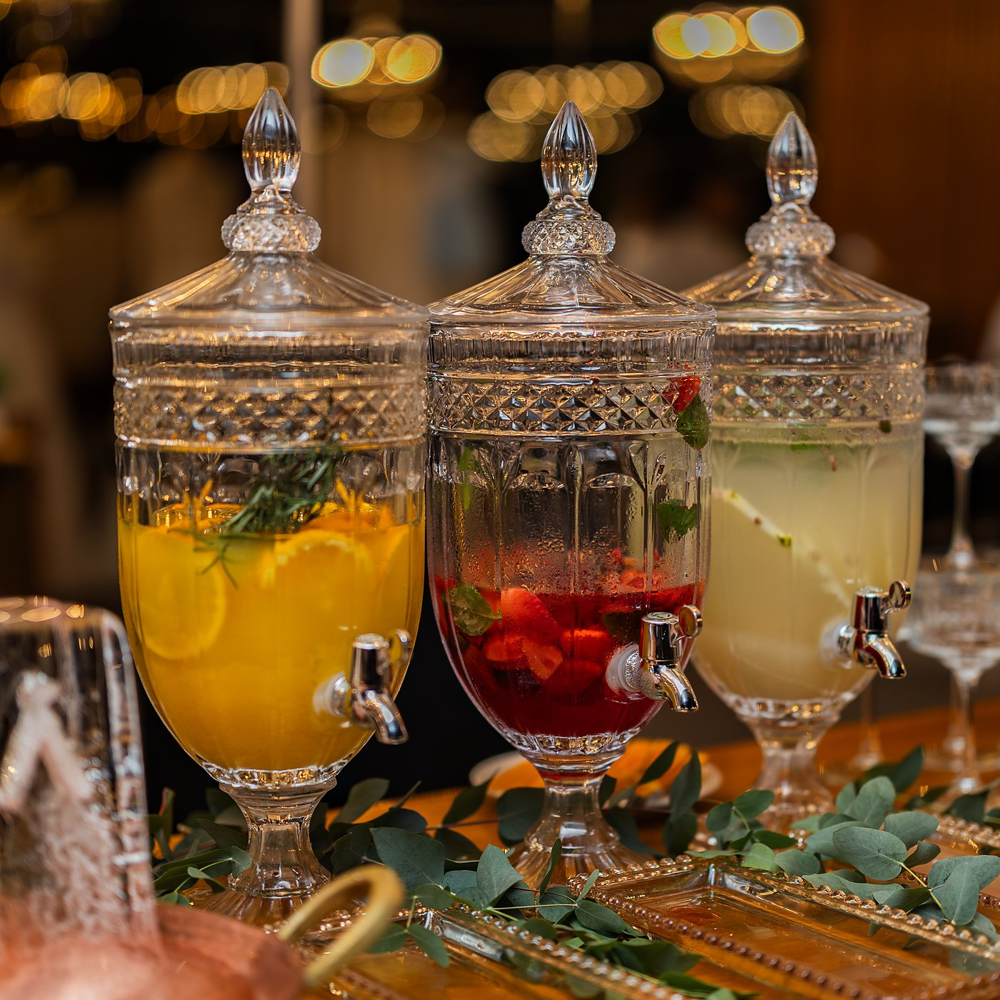
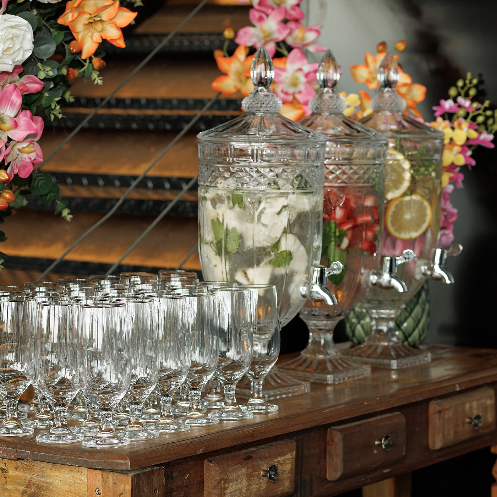
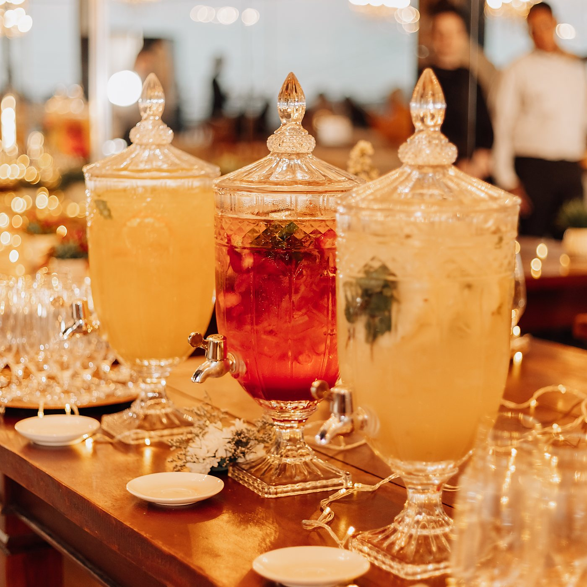
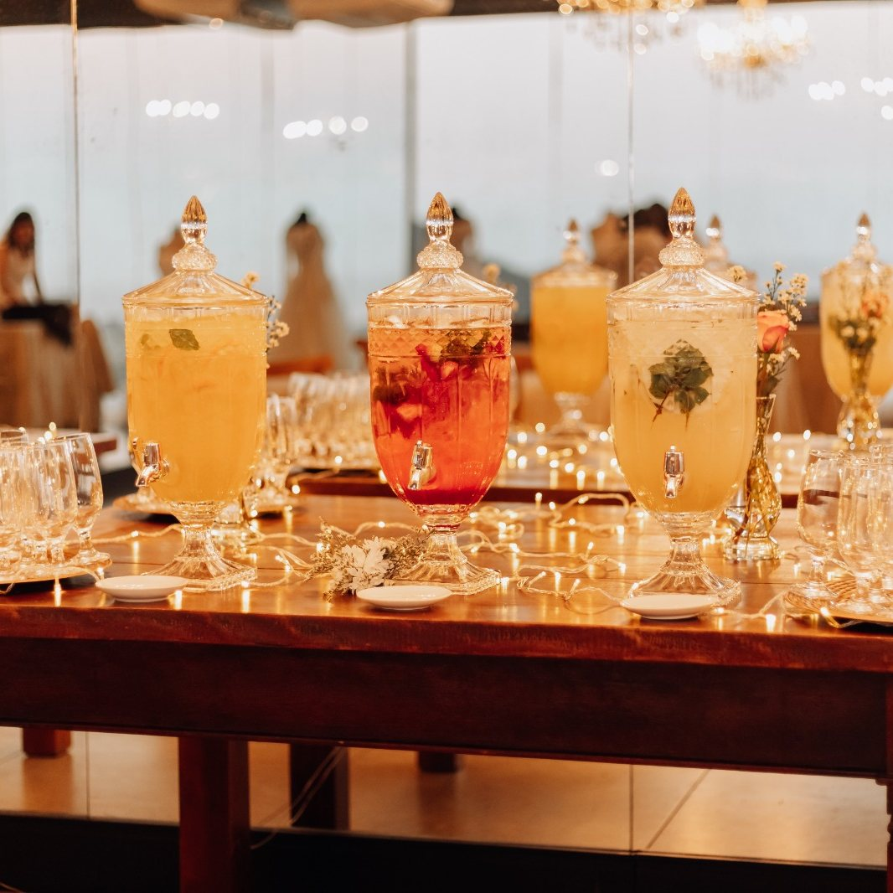

O que fica
Ninguém chega e fica esperando de mãos vazias. A festa começa no primeiro gole.
Três sabores
As três suqueiras ficam abertas ao mesmo tempo, com fruta e erva de verdade dentro. Cada convidado escolhe o que quiser e volta quantas vezes quiser.
Água Saborizada
R$ 1.200,00
valor fixo por evento
Não é valor por pessoa: o preço é o mesmo para 80 ou para 300 convidados. A mesa vem montada, decorada, iluminada e acompanhada pela nossa equipe do começo ao fim do serviço.
O pacote por dentro
O que vem junto
Está incluso
Uma hora e meia de serviço abre 30 min antes
A mesa começa a servir 30 minutos antes da cerimônia e segue por uma hora e meia, cobrindo a chegada dos convidados e a espera até a recepção.
Mesa com Suqueiras Imperial
As três suqueiras de cristal e os copos, montados pela nossa equipe no ponto de chegada dos convidados.
Decoração da mesa
A composição de flores e verdes ao redor das suqueiras já vem inclusa, no clima da decoração do evento.
Iluminação em LED
Os LEDs da mesa também entram no pacote. Nada de estrutura ou luz para contratar por fora.
Os três sabores
Abacaxi com hortelã
Fatias de abacaxi e folhas frescas de hortelã. Cítrico, leve e o mais pedido no calor.
Morango e manjericão
Morangos fatiados e folhas de manjericão. Doce na entrada e herbáceo no final.
Laranja e alecrim
Rodelas de laranja e ramos de alecrim. Aromático, cítrico e o que mais perfuma a mesa.
Sem álcool serve todo mundo
Criança, gestante e quem vai dirigir bebem junto. É a opção que atende a mesa inteira na chegada.
- O valor é fixo por evento e não muda com o número de convidados.
- Aos valores é somada a taxa de serviço de 15%.
- Os valores de tabela podem ser reajustados até a data do evento. Quem já tem contrato fechado mantém o preço combinado.
- Dá para incluir no contrato ou acrescentar depois. Fale com o seu consultor.

A mesa
Montada no ponto de chegada dos convidados.

Os três sabores
Abertos ao mesmo tempo, a festa inteira do serviço.

Decoração e luz
Verdes, flores e LEDs já inclusos no pacote.

Fruta de verdade
Fruta fatiada e erva fresca dentro da suqueira.

Os copos
Postos e repostos pela equipe durante o serviço.

Na chegada
Pronta 30 minutos antes da cerimônia.

A mesa inteira
Do jeito que o convidado encontra ao chegar.
Como funciona
-
Pronta antes da cerimônia
A mesa abre 30 minutos antes e serve por uma hora e meia. Quem chega adiantado já encontra alguma coisa gelada esperando.
-
Os três sabores juntos
As três suqueiras ficam na mesa ao mesmo tempo. Ninguém escolhe um sabor só: o convidado prova, volta e repete o que gostou mais.
-
Serve todo mundo
É sem álcool. Criança, gestante e quem vai dirigir bebem junto, e ninguém fica de fora do brinde de chegada.
-
Montagem por nossa conta
Mesa, decoração, LEDs, copos e reposição são da nossa equipe. Vocês só escolhem onde ela fica.